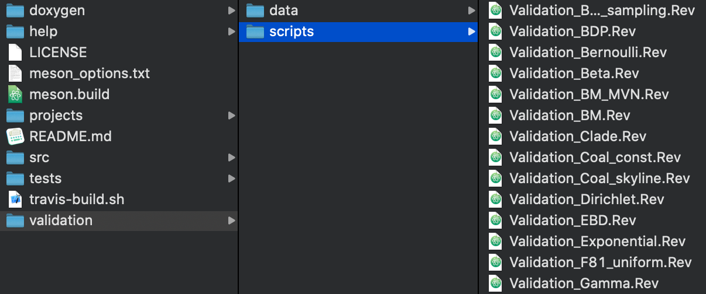

We use a procedure that is called Simulation-Based Calibration (SBC) (Talts et al. 2018) to test the implementation of our models (i.e., likelihood functions and parameter transformations) and MCMC algorithm (i.e., moves). The idea behind SBC is using the frequentists properties of Bayesian inference. That is, if we draw parameter values from their prior distributions and subsequently simulate data using these parameter values, the inferred XX % credible intervals (e.g., 90% CI) will contain the true (i.e., the simulated) parameter value in XX % of the repetitions (coverage probabilities; e.g., 90% of the simulations).
The last sentence was quite a mouthful. Read it over and over again and try to fully understand it. With some more words, the SBC algorithm/procedure works as follows:
Now let’s work through an example to understand how to implement SBC in RevBayes.
Overview of an SBC analysis in RevBayes:
Rev script for the validation analysis.Rev script, e.g., rb scripts/Validation_normal.Rev or mpirun -np 20 rb-mpi scripts/Validation_normal.RevIn the RevBayes GitHub repository, the validation scripts are all located within the folder called validation.

validation directory with the two sub-directories scripts and data.In this directory there are two subdirectories:
scripts: containing the Rev scripts defining different models and analyses that use the RevBayes validation functions to evaluate the coverage of relevant parameters.data: containing the data files used to determine the dimensions of the simulations for some
of the validation analyses (e.g., taxon names, number of taxa, alignment length). Data files
are not necessary for validation of all models.We can write a simple validation script that checks the performance of the normal distribution. This script will check the coverage probabilities of estimators for parameters of the normal distribution. The model we will use is shown in .
The outcome of this validation will allow us to determine if the following things are behaving correctly in RevBayes:
The validation methods in RevBayes will take a model and set of moves, simulate true values for stochastic nodes and an observed data, estimate the values for the stochastic nodes conditioned on the simulated data, and compare whether the true values fall within a given credible interval (the default value is 90%) for each stochastic random variable. This routine is performed for many simulation replicates (set in the validation script) and the coverage probability across replicates is summarized and reported to the screen.
The complete validation script for the Normal distribution can be found in the RevBayes GitHub repository:
Validation_normal.Rev.
If you view this script, you will see that it begins with a header in comments that provide details about the script:
# RevBayes Validation Test: Normal Distribution – the name of the validation test.# Model: 10 random variables from a normal distribution with a uniform prior on the mean and exponential prior on the standard deviation. – a brief description of what the validation script is testing.# Inference: MCMC algorithm with the following moves: mvSlide and mvScale – a list of moves that are tested in this validationauthors: Sebastian Hoehna – the author of the script and the person you should contact if you implement any new functionality in RevBayes that break their validation test.The first part of the script specifies the model DAG (i.e., random variables and conditional dependency) and its dimensions (i.e. the number of samples).
n_samples = 10
mu ~ dnUniform( -10, 10 )
sigma ~ dnExponential( 1.0 )
moves = VectorMoves()
moves.append( mvSlide(mu) )
moves.append( mvScale(sigma) )
for (i in 1:n_samples ) {
x[i] ~ dnNormal(mu,sigma)
x[i].clamp( 0.0 ) # clamping is actually not necessary but good practice
}
Note that in this script, the data node is clamped: x[i].clamp( 0.0 ).
This is not necessary since the validation methods will change the clamped value to the simulated data value for each simulation replicate.
It also doesn’t hurt to clamp the nodes in this case if you prefer to do so.
Clamping will make it more obvious which variables represent the data.
Once the model DAG is set up, you can create a model workspace variable:
mymodel = model(mu)
Before using the validation functions, you need to first have an MCMC workspace variable.
Because the mcmc() function requires a list of monitors, we create an empty list to satisfy the required arguments of that function.
Ultimately, the validation functions will not actually use this monitor because a new ones
will be created for each simulation replicate.
monitors = VectorMonitors()
The MCMC object is initialized just like in any normal MCMC analysis.
mymcmc = mcmc(mymodel, monitors, moves)
The first step in specifying the validation analysis is to create a workspace object using
the validationAnalysis() function.
This function takes 2 arguments: (1) and MCMC object and (2) the number of
simulation replicates you want it to perform.
validation = validationAnalysis( mymcmc, 1000 )
For this validation, note that we chose 1000 replicates. For very large numbers of replicates, you will have a better approximation of the coverage probability. However, there is a substantial trade-off when it comes to run-times. Some of the validation scripts can take quite a long time to run. Importantly, this can be alleviated if you compile the MPI version of RevBayes, which will run the individual replicates in parallel.
Next, you can specify a burn-in period, which will run the MCMC for each replicate for a specified number of MCMC cycles, while re-tuning the moves.
validation.burnin(generations=10000,tuningInterval=100)
Now you can run the validation MCMC. (As previously mentioned, it is best to compile the MPI version of RevBayes.) The number of generations should be chosen at your discretion, but this should be a sufficient number of samplesso that you can ensure your MCMC has effectively sampled the target distribution.
validation.run(generations=30000)
Once the validation run is complete, you can use the .summarize() method of the validation object.
validation.summarize( coverageProbability=0.9 )
Summarizing analysis ...
The validation analysis ran 1000 simulations to validate the implementation.
This analysis used a 0.9 credible interval.
Coverage frequencies should be between 0.881 and 0.918 in 95% of the simulations.
Coverage frequencies of parameters in validation analysis:
==========================================================
mu 0.917
sigma 0.882
At this point, you should conduct a visual inspection of the coverage frequencies for the parameters of your model. Do the coverage frequencies fall within the interval calculated by the validation analysis to a reasonable degree? In the example output above, the interval is 0.881 to 0.918.
SBC is a stochastic procedure, so it can happen by chance that your coverage probabilities are outside the expected range. You should run the SBC with more replicates and check if your coverage probabilities is now closer to the expected value.
If more replicates are not helping, then you should check your Rev script if everything is properly set-up, that you didn’t forget any MCMC moves by chance.
If you still get unexpected coverage probabilities, then you need to check:
This can happen when you run multiple SBC’s at the same time because they have hard-coded output files. That means, your output might have been overwritten and does not match the analysis/model. Make sure that the